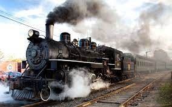

Einstein

Einstein
En 1927, Einstein avait lancé un défi à l’interprétation orthodoxe de la mécanique
quantique construite par Niels Bohr et Werner Heisenberg. L’expérience de pensée
qu’il avait proposée a finalement été réalisée avec des molécules soumises aux
rayons X disponibles au synchrotron Soleil. Elle confirme que la réponse donnée à
l’époque par Niels Bohr était correcte, fournissant une nouvelle preuve de la
cohérence de la mécanique quantique.
Le rayon de lumiére

La rayon de lumiere
Le rayon de lumière : Les réflexions d’Einstein sur la lumière ont
commencé à l’âge de 16 ans. Il s’est posé la question suivante :
que se passerait-il si vous chassez un rayon de lumière qui bouge à
travers l’espace ? D’après lui, si vous réussissiez à rattraper la
lumière, vous seriez capable d’observer la lumière figée dans
l’espace. Mais par définition la lumière ne peut être figée.
Einstein a finalement réalisé que la lumière ne pouvait être ralentie,
et serait toujours en mouvement, bougeant à sa propre vitesse.
C’est donc un autre paramètre qui devait changer, et ce paramètre
c’est le temps. Cette expérience a mené à l’élaboration de la
théorie de la relativité.
« La théorie, c’est quand on sait tout et que rien ne fonctionne. La pratique, c’est quand tout
fonctionne et que personne ne sait pourquoi. Ici, nous avons réuni théorie et pratique : Rien
ne fonctionne… et personne ne sait pourquoi ! » Albert Einstein.
Le paradoxe du train

Le paradox du train
Jusqu’en 1905, année qui signa l’avènement de la théorie de la relativité
restreinte, le temps était considéré par les scientifiques comme universel. Le
paradoxe du train d’Einstein réfute la véracité de cette théorie et montre que
le temps dépend du référentiel dans lequel on le mesure.
Le temps écoulé entre deux événements dépend donc du système de
référence utilisé. Imaginez-vous debout dans un train, pendant que votre ami
se tient sur le quai, vous regardant passer. Si une lumière frappe les deux
extrémités du train, votre ami pourrait voir les deux rayons de lumière en
même temps. Mais en étant à l’intérieur du train, vous êtes plus proche du
rayon de lumière vers lequel le train se dirige, vous verrez donc ce rayon en
premier car la lumière est à une distance plus courte. Cette expérience de
pensée a montré que le temps prend une dimension différente pour ce qui
bouge et ce qui se tient debout. Cette théorie d’Einstein montre que le temps
et l’espace sont relatifs, et que la simultanéité n’existe pas.
L’imagination est plus importante que la connaissance. La connaissance est limitée alors
que l’imagination englobe le monde entier, stimule le progrès, suscite l’évolution. » Albert
Einstein au sujet de la science.
Les jumeaux
Les jumeaux
Cette expérience de pensée est une variation d’une expérience similaire
d’Einstein, qui s’intéresse à l’écoulement du temps. Imaginons que vous ayez
un jumeau, né exactement au même moment que vous. Mais au moment où
votre jumeau est né, il est instantanément placé dans une navette spatiale et
lancé dans l’espace pour voyager à travers l’univers, le tout à la vitesse de la
lumière. A en croire la théorie de la relativité d’Einstein, votre jumeau et vous
allez vieillir de manière différente. Le temps s’écoule plus lentement à mesure
que vous approchez la vitesse de la lumière, et donc votre jumeau vieillira
plus lentement que vous. Lors de son retour sur terre, vous prendrez votre
retraite, tandis que votre jumeau sortira à peine de la puberté.
La boîte

La boîte
Imaginez que vous flottez à l’intérieur d’une boîte, incapable de voir ce qu’il se passe à
l’extérieur. Soudainement, vous vous écrasez au sol. Que s’est-il passé ? Est-ce que la boîte
a été tirée vers le bas par la gravité ? Ou bien peut-être que la boîte a été tirée vers le haut
par une corde ? En fait, ces deux actions produiraient le même effet, ce qui a mené Einstein
à la conclusion qu’il n’y a pas de différence entre la gravité et l’accélération, ce sont
exactement les mêmes phénomènes, et donc la gravité peut affecter le temps et l’espace.
Cette expérience prend une très grande importance dans la théorie générale de la relativité
d’Einstein.
Placez votre main sur un poêle une minute et ça vous semble durer une heure.
Asseyez-vous auprès d’une jolie fille une heure et ça vous semble durer une minute. C’est
ça, la relativité. » Albert Einstein.
La piéce de monnaie

La piéce de monnaie
Certes, Einstein n’a jamais été un grand spécialiste de la théorie quantique, et a même
essayé de montrer son inexactitude grâce à ses théories de la pensée. Mais au lieu de
décourager les physiciens de la théorie quantique, ces affronts leur ont permis de
perfectionner leurs œuvres. L’une des théories de la pensée d’Einstein était liée à
l’intrication quantique, qu’il appelait « étrange action à distance ». Imaginez être en
possession d’une pièce, qui peut être divisée entre ses deux faces. Vous lancez les deux
morceaux et sans regarder, donnez un morceau à votre ami, tandis que vous gardez l’autre
pour vous. Votre ami part ensuite dans une navette spatiale et voyage dans l’univers. Vous
regardez votre moitié de pièce, pour constater que vous détenez le côté « pile », et
comprenez donc instantanément que votre ami, alors à des millions de kilomètres de là,
détient le côté « face ». Mais si vous considérez les côtés de cette pièce comme
indéterminés, alternant entre « pile » et « face » jusqu’au moment où vous en regardez une,
alors la pièce peut détourner la vitesse de la lumière, ce qui affecte chaque côté
indépendamment du nombre d’années lumières qui les sépare.